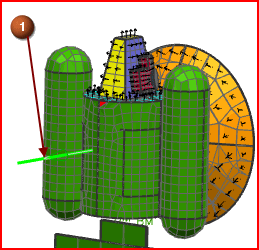

在推进器上创建1D 网格
使用3个1D 梁单元划分推进器网格，由于推进器横截面为锥形，在前后截面之间使用锥形来简化模型。
 仿真导航器
仿真导航器
-

 多边形几何体 (展开)
多边形几何体 (展开) -
 THRUSTER (取消选中)
THRUSTER (取消选中)
注释
关闭所有四个推进器几何体的显示。

 1D网格 (高级仿真工具条—网格下拉菜单)
1D网格 (高级仿真工具条—网格下拉菜单)
-
 (THRUSTER_AXIS 曲线)
(THRUSTER_AXIS 曲线)

注释
为了辅助选择推进器的中心线，已事先为您定义好曲线 THRUSTER_AXIS。箭头表示锥形截面中的前后横截面，确认已在网格收集器中正确指派这些。
-
反向 (箭头必须指向外侧)
-
类型
梁

-
网格参数
-
网格密度选项
数量
-
单元数
3
-
目标收集器
-
 自动创建
自动创建 -
网格收集器
推进器收集器
-
确定
1D 网格对话框

提示
要显示截面，可以在仿真导航器中展开 1D 网格收集器，右击网格节点并选择编辑显示，在对话框中将显示截面设置为实体。
注释
查看用于显示网格分割的绿色 BM 标记。